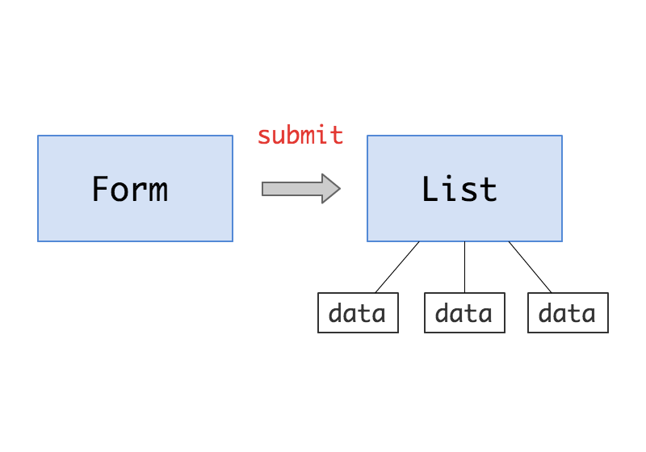
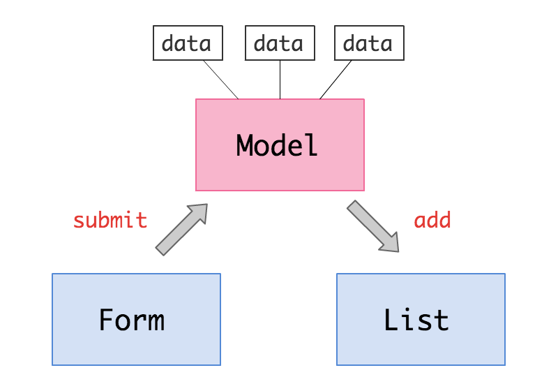
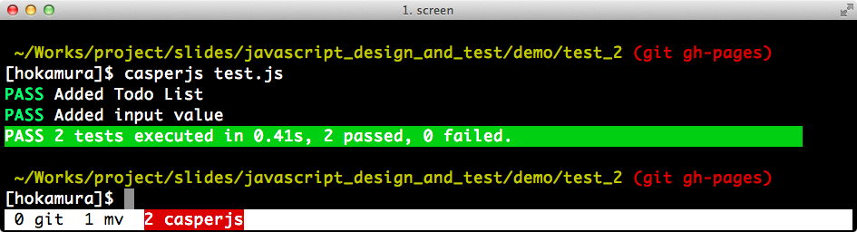

自己紹介

- 外村 和仁
- @hokaccha
- 株式会社 ピクセルグリッド
- JavaScript, Node.js, Ruby
宣伝 1
今日話さないこと
- JavaScriptの基礎知識、jQueryの導入
- 気持ちいいUIやUXがうんちゃら
- CanvasやWebGLを使ったリッチでイケてるゲームの作り方
今日の話
フロントエンドJavaScriptにおける
- 設計の必要性
- 設計のコツ
- テストの手法
そもそも設計ってなによ？
大きく分けて二つの設計ある
1. モジュールやクラスの設計（ミクロ）
- prototypeを用いたOOPにすべきだー
- 使いやすいAPI設計にすべきだー
- むやみにグローバル汚染したあかんー
- 継承がうんぬんカプセル化がうんぬん
※ この話は今日はしない
2. アプリケーション全体の設計（マクロ）
- MVCに従ってコードを整理すべきだー
- 役割ごとにモジュールやクラスにまとめるべきだー
※ 今日出てくる「設計」はこっちの意味
アプリケーションの設計で重要なこと
1. ModelとViewを明確に分ける
2. Viewを疎結合にする
他にもあるけど、とりあえず
これだけやるとだいぶ違う
Model？ View？
- Model
- View
- Controller
クライアントサイドMVC・・・
お前のMVCはMVCじゃない！
時代はMVVMだ！
いやMVPだ！
いやいやMOVEだ！
MVCはn度死ぬ
Backbone.jsの
ViewはControllerだ！
こんなかんじでみんな疲れてきた
MV*
MVWTF
言葉は重要だけど今日の
話の本質はそこじゃない
今日はこういう意味で使う
- Model : データを管理する
- View : DOMを管理する
- Controller : 説明しない
大事なのでもう一回
JavaScriptによるアプリケーションの設計で重要なのはこの二つ
- ModelとViewを明確に分ける
- Viewを疎結合にする
ケーススタディ: Todoアプリ
よくあるコード
$(function() {
// 要素取得してー
var $form = $('.todoForm');
var $input = $form.find('input[type="text"]');
var $list = $('.todoList');
// フォームがサブミットされたらー
$form.submit(function(e) {
e.preventDefault();
// 要素作って追加ー
var text = $input.val();
var html = '<li><input type="checkbox">' + text + '</li>';
var $li = $(html);
$li.find('input[type="checkbox"]').change(function() {
$(this).closest('li').toggleClass('complete');
});
$list.append($li);
});
});このコードの問題点
- データがDOMにしかない（データとDOMが密結合）
- フォームとリストが密結合

密結合だと何が困るのか
- 仕様変更に弱い
- 複数人で開発しづらい
- テストしづらい
機能追加依頼
よく使うTodoを用意してクリック
で入力できるようしてー
できましたー
$(function() {
var $form = $('.todoForm');
var $input = $form.find('input[type="text"]');
var $list = $('.todoList');
var $usual = $('.usualList li');
// 共通の処理（リストを追加する部分）を関数に切り出した
function addList(text) {
var html = '<li><input type="checkbox">' + text + '</li>';
var $li = $(html);
$li.find('input[type="checkbox"]').change(function() {
$(this).closest('li').toggleClass('complete');
});
$list.append($li);
}
// よく使う一覧をクリックしたらリストに追加
$usual.click(function(e) {
e.preventDefault();
var text = $(this).text();
addList(text);
});
// フォームをサブミットしたらリストに追加
$form.submit(function(e) {
e.preventDefault();
var text = $input.val();
addList(text);
});
});リストに追加する部分を
関数に切り出した！
これで勝つる！
ちょっと待って
仕様変更があるたびに
このようなことを繰り返すの？
どう見てもスパゲッティに一直線です
本当にありがとうございました
どうする？
よろしい、ならば設計だ。
ModelとViewを分ける
まずModel
model.todo.js
// Todoのデータ管理するModelクラス
function Todo(data) {
this.text = data.text;
this.complete = !!data.complete;
}
// 説明簡略化のためBackbone.Eventから拝借したEventをmixin
// onとかtriggerメソッドが使えるようになる
$.extend(Todo.prototype, Events);
$.extend(Todo, Events);
// completeプロパティを変更するメソッド
Todo.prototype.setComplete = function(complete) {
this.complete = !!complete;
this.trigger('change:complete', this);
};
// 自身のインスタンスを保持する配列
Todo.list = [];
// 新規Todoを追加するためのクラスメソッド
Todo.add = function(text) {
var todo = new Todo({ text: text });
Todo.list.push(todo);
this.trigger('add', todo);
};ここに注目！
- DOM操作を一切おこなっていない
- データの管理だけをおこなっている
次にView
Viewはどのような単位で分けるか
UIコンポーネントごとに
分けるとわかりやすい
この場合フォームとリスト
view.todoForm.js
// Todoを入力するフォームを管理するViewクラス
function TodoFormView($el) {
this.$el = $el;
this.$input = this.$el.find('input[type="text"]');
this.$el.submit(this.onsubmit.bind(this));
}
// サブミット時のイベントハンドラ
TodoFormView.prototype.onsubmit = function(e) {
e.preventDefault();
Todo.add(this.$input.val());
};ここに注目！
- サブミットされたらModelにデータを追加するだけ
- 他のViewと全く関連がない（疎結合）
view.todoList.js
// Todo一覧のリストを管理するViewクラス
function TodoListView($el) {
this.$el = $el;
Todo.on('add', this.add.bind(this));
}
// Todoの要素を追加するメソッド
TodoListView.prototype.add = function(todo) {
var item = new TodoListItemView(todo);
this.$el.append(item.$el);
};
// Todo一覧の要素をを管理するViewクラス
function TodoListItemView(todo) {
this.todo = todo;
this.$el = $('<li><input type="checkbox">' + todo.text + '</li>');
this.$checkbox = this.$el.find('input[type="checkbox"]');
this.$checkbox.change(this.onchangeCheckbox.bind(this));
this.todo.on('change:complete', this.onchangeComplete.bind(this));
}
// checkboxの値が変わった時のイベントハンドラ
TodoListItemView.prototype.onchangeCheckbox = function() {
this.todo.setComplete(this.$checkbox.is(':checked'));
};
// モデルのcompleteプロパティの値が変わった時のイベントハンドラ
TodoListItemView.prototype.onchangeComplete = function() {
if (this.todo.complete) {
this.$el.addClass('complete');
}
else {
this.$el.removeClass('complete');
}
this.$checkbox.attr('checked', this.todo.complete);
};ここに注目！
- ModelのイベントをトリガーにDOM構築をおこなっている
- 他のViewと全く関連がない（疎結合）
main.js
最後にViewを初期化
$(function() {
new TodoFormView( $('.todoForm') );
new TodoListView( $('.todoList') );
});

ViewはModelを通じて
データをやりとりする
Viewが疎結合なので
仕様変更に強い！
機能追加依頼
よく使うTodoを用意してクリック
で入力できるようしてー
はいこれだけー
main.js
$('.usualList li').click(function() {
Todo.add($(this).text());
});※ 必要に応じてViewクラスにしてね
機能追加依頼
全部完了にするボタンつけてー
はいこれだけー
model.todo.js
Todo.setCompleteAll = function() {
Todo.list.forEach(function(todo) { todo.setComplete(true); });
};main.js
$('.completeAll').click(function() {
Todo.setCompleteAll();
});※ 必要に応じてViewクラスにしてね
既存のViewをいじることなく
機能追加に対応できる！
ちなみにBackbone.jsを使うと
同じようなことが簡単にできます
ここまでのまとめ
きちんと設計するとハッピーになれる
次、テストのはなし。
結合テストと単体テスト
結合テスト
- HTMLやCSSも含めた一連の流れのテスト
- 「フォームに値を入力してボタンを押したらバリデーションが走ってOKならサブミットされるか」とか
- ブラウザをエミュレートしたりするツールが必要
結合テストのためのライブラリ
- Selenium
- capybara
- CasperJS
CasperJSの例
var casper = require('casper').create();
casper.start('./index.html', function() {
this.evaluate(function() {
var form = document.querySelector('.todoForm');
form.querySelector('input[type="text"]').value = 'foo';
form.querySelector('input[type="submit"]').click();
});
});
casper.then(function() {
this.test.assertEvalEquals(function() {
return document.querySelectorAll('.todoList li').length;
}, 1, 'Added Todo List');
this.test.assertEvalEquals(function() {
return document.querySelector('.todoList li').textContent;
}, 'foo', 'Added input value');
});
casper.run(function() {
this.test.done();
this.test.renderResults(true);
});実行結果

Seleniumの例（Ruby）
実行するとFirefoxが起動してテストする
require 'test/unit'
require 'selenium-webdriver'
class TodoAppTest < Test::Unit::TestCase
def setup
@driver = Selenium::WebDriver.for :firefox
end
def teardown
@driver.quit
end
def test_submit_todo
url = "file://#{File.expand_path('..', __FILE__)}/todo/index.html"
@driver.navigate.to url
input = @driver.find_element :name => 'text'
input.send_keys 'foo'
input.submit
list = @driver.find_elements :css => '.todoList li'
assert_equal(list.size, 1)
assert_equal(list[0].text, 'foo')
end
end単体テスト
- 個々のモジュールやメソッドを対象にテストを行う
- 「このメソッドを実行したらこの値が返ってくるか」とか
- JavaScriptだけで完結できる
単体テストのためのライブラリ
- Mocha
- Jasmine
- QUnit
- JsTestDriver
- Buster.JS
全部は紹介しきれないので
今日はMochaについて解説します
Mochaの特徴
- アサーション機能がない（自由に選べる）
- 機能が少ないので覚えることが少ない
- 非同期のテストが簡単
Mochaの書き方
基本はこれだけ
describe('テストの対象', function() {
it('テストの内容', function() {
// ここで例外が投げられたらテストが落ちる
});
it('テストの内容', function() {
// ここで例外が投げられたらテストが落ちる
});
});describeのネスト
describe('テストの対象', function() {
// describeはネストできる
describe('テストの対象', function() {
it('テストの内容', function() {
// ...
});
});
describe('テストの対象', function() {
it('テストの内容', function() {
// ...
});
});
});事前処理と事後処理
describe('テストの対象', function() {
// テストの事前処理
before(function() {
});
// テストの事後処理
after(function() {
});
// itの前に毎回行う処理
beforeEach(function() {
});
// itの後に毎回行う処理
afterEach(function() {
});
});非同期のテスト
describe('テストの対象', function() {
// doneを引数に取ると非同期
it('非同期のテスト', function(done) {
setTimeout(function() {
// ここにテストを書く
done();
}, 100);
});
});アサーションライブラリの選定
現状ほぼこの二つのどちらかしかない
- Chai
- expect.js
Chaiは動かないブラウザも
あるのでexpect.jsがおすすめ
expect.jsの例
条件に合わないと例外を投げる
expect(foo).to.be('bar');
expect(foo).to.eql({ foo: 'bar' });
expect(foo).to.have.property('bar', 'baz');
expect(foo).to.be.a(Date);
expect(function() {
foo();
}).to.throwError();Mocha + expect.jsの例
describe('Todo', function() {
describe('.add', function() {
it('Todo.listにインスタンスが追加されること', function() {
Todo.add({ text: 'foo' });
expect(Todo.list).to.have.length(1);
expect(Todo.list[0]).to.be.a(Todo);
});
});
describe('#setComplete', function() {
var todo;
beforeEach(function() {
todo = new Todo({});
});
it('completeが設定されること', function() {
todo.setComplete(true);
expect(todo.complete).to.be(true);
});
it('change:completeイベントが発火すること', function(done) {
todo.on('change:complete', function() {
expect(todo.complete).to.be(true);
done();
});
todo.setComplete(true);
});
});
});Sinon.js
テストダブルのライブラリ
テストダブル？
テストダブル (Test Double) とは、ソフトウェアテストにおいて、テスト対象が依存しているコンポーネントを置き換える代用品のこと。ダブルは代役、影武者を意味する。
テストダブル - Wikipedia
Sinon.jsの主な機能
- spy
- stub
- mock
- Fake Timer
- Fake XHR
spyの例
対象のメソッドが呼ばれたか調べる
// Todo.addにspyを忍ばせる
var spy = sinon.spy(Todo, 'add');
// Todo.addメソッドを実行
Todo.add('foo');
// メソッドが呼ばれたかどうかや引数を調べられる
expect(spy.calledOnce).to.ok();
expect(spy.args[0][0]).to.be('foo');
// spyを解除
spy.restore();stubの例
window.confirmで分岐するコード
ListView.prototype.remove = function() {
if (window.confirm('削除しますか？')) {
this.$el.remove();
this.$el = null;
}
};テスト書いてみる
テストのたびにconfirmが出る
（しかも選択によってテストの成否が変わる）
describe('ListView', function() {
var listView;
beforeEach(function() {
listView = new ListView($('<ul>'));
});
describe('#remove', function() {
it('要素が削除されること', function() {
listView.remove();
expect(listView.$el).to.be(null);
});
});
});解決策
stubを使う
ダイアログがでない！結果
describe('ListView', function() {
describe('#remove', function() {
var stub;
var listView;
beforeEach(function() {
stub = sinon.stub(window, 'confirm');
listView = new ListView($('<ul>'));
});
afterEach(function() {
stub.restore();
});
it('window.confirmが呼ばれること', function() {
listView.remove();
expect(stub.calledOnce).to.ok();
expect(stub.args[0][0]).to.be('削除しますか？');
});
context('window.confirmでOKを押したとき', function() {
beforeEach(function() {
stub.returns(true);
});
it('要素が削除されること', function() {
listView.remove();
expect(listView.$el).to.be(null);
});
});
context('window.confirmでキャンセルを押した時', function() {
beforeEach(function() {
stub.returns(false);
});
it('要素が削除されないこと', function() {
listView.remove();
expect(listView.$el).to.not.be(null);
});
});
});
});Sinon.jsは他にも色々できて
超便利なんだけど省略
よくある質問のコーナー
Q. Modelのテストはいいんだけど
Viewのテストが難しいです
A. 疎結合なクラスにしていれば
比較的やりやすくなる
TodoFormViewのテスト
describe('TodoFormView', function() {
var todoForm;
var html = '<form><input type="text"></form>';
beforeEach(function() {
todoForm = new TodoFormView($(html));
});
it('$elに要素がセットされていること', function() {
expect(todoForm.$el.is('form')).to.ok();
});
context('submitしたとき', function() {
var spy;
beforeEach(function() {
spy = sinon.spy(Todo, 'add');
todoForm.$input.val('foo');
todoForm.$el.submit();
});
afterEach(function() {
spy.restore();
});
it('textの値がTodo.addに渡されること', function() {
expect(spy.calledOnce).to.ok();
expect(spy.args[0][0]).to.be('foo');
});
});
});他のViewと関連がないため
テストが（比較的）楽
Q. でもUIの動きとかはテスト
できないでしょ？
A. そもそもプログラムでテスト
するものかどうかを検討する
テスト可能なものと不可能なもの
- 「気持ちいい動きをしているか」はテスト不可能
- 「アニメーション終了後にこの位置にあるか」はテスト可能
こういうテストを書いてる
dispatchEventでイベントを発火させて動くか確認する
// jQueryのtriggerのようなもの
function trigger(element, eventType, params) {
var ev = document.createEvent('Event');
ev.initEvent(eventType, true, false);
$.extend(ev, params || {});
element.dispatchEvent(ev);
}
// タッチイベントを発火させて現在地が動くかをテストする
it('should move to next', function() {
trigger(f.element, touchStartEvent, { pageX: 50, pageY: 0 });
expect(f.currentPoint).to.be(0);
trigger(f.element, touchMoveEvent, { pageX: 40, pageY: 0 });
trigger(f.element, touchMoveEvent, { pageX: 30, pageY: 0 });
expect(f.currentPoint).to.be(0);
trigger(document, touchEndEvent);
expect(f.currentPoint).to.be(1);
});